基于 IP-XACT 的 PSS 建模实现 Shift-Left SoC 验证
论文针对 SoC 级 corner-case 功能 bug 常在硅后才发现、人工规格书不完整导致功能覆盖率 bin 遗漏大量硬件条件的问题，提出从 IP-XACT（IEEE 1685）设计描述自动生成 PSS 模型的 shift-left 验证方法学。解释脚本从 IP-XACT XML 提取层次结构、互连、端口行为与端到端路径，构建统一的 JSON PSS 建模数据库；生成脚本据此自动产出 PSS 组件与 action，realization layer 直接引用数据库，免除逐项目手工绑定 RTL 路径，实现 action library 跨项目复用。功能行为建模经 Port Scan、Behavior Search、Action Matching 三步，系统枚举 ad-hoc 信号与 AXI/ACE 等协议接口行为及目的端 idle/busy/clock_gated/power_gated 等状态。案例研究显示 blk_cpu 功能覆盖率 bin 总数提升约 30%、cross-function bin 提升 434%，配合信号 monitor 与自动生成的 assertion 可在 pre-silicon 复现低频 corner-case；AI 风险预测（Failure Likelihood Model F1≈0.78）以风险标签直接写入 PSS 数据库指导场景加权。作者认为 PSS+IP-XACT 是 AI 驱动验证时代实现真正 shift-left 的关键方法学。
现代 SoC 的功能 corner-case bug 常到硅阶段才被发现，功能覆盖率可信度下降，SoC 验证沦为集成验证。论文归纳两大根因：(1) 规格不完整——人工编写的规格书只描述高层功能，遗漏大量 SoC 级硬件条件，基于规格的覆盖率 bin 无法指引缺失场景，而简单随机化几乎打不出真实硅 bug；(2) 验证环境受限——pre-silicon 比硅慢约三个数量级，可执行场景有限，工程师无法手工构造全部硬件条件。此外，传统 PSS 建模偏重功能行为与流程，未充分利用 SoC 层次、控制/数据路径等结构信息，且同一 IP 功能因不同产品集成差异需反复改写 realization layer，造成重复劳动。
从多个 IP-XACT XML 文件提取 SoC 层次、实例互连、端口行为与端到端路径，合并为统一的 JSON PSS 建模数据库；由解释脚本与生成脚本两个工具自动完成数据库构建与 PSS 模型生成。结构建模产出 db_types 包、各 block 的 *_db 数据库组件（含 build_db 与 lookup actions）以及 path_catalog_c 端到端路径目录。功能行为建模分三步：Port Scan 枚举块间连接端口（区分 ad-hoc 信号与 AXI/ACE/CHI 协议接口组）；Behavior Search 枚举各端口可能操作，并捕获目的端 idle/busy/clock_gated/power_gated/error/recovering 状态；Action Matching 通过 action library 中 YAML 注释元数据将 action 与数据库行为条目关联，realization layer 引用数据库自动绑定 RTL 路径与连接信息。另通过外部脚本流生成 signal behavior monitor 与 action 行为 assertion；AI 风险预测引擎（transformer 多模态融合编码器 + 基于 IP-XACT 连接图的 GNN 传播模型）输出 0-3 实例风险标签，直接写入 PSS 数据库影响场景加权与 action 优先级。
blk_cpu 的功能覆盖率 bin 总数提升约 30%
cross-function bin 数量提升 434%
AI 风险预测的 Failure Likelihood Model 达到 F1≈0.78
案例研究演示了在 pre-silicon 环境发现 corner-case 条件的能力，但论文未给出具体 bug 发现数量、运行时间或工程开销等量化数据
相对 DVCon US 2018 的 'Building Portable Stimulus Into Your IP-XACT Flow'（将预定义 PSS action 嵌入 IP-XACT 以反映组件树），本文更进一步：自动分析 IP-XACT 与设计规格识别 SoC 级所有潜在功能 case，自动生成包含 components 与 actions 的完整 PSS 模型，无需手工 realization layer 工作；realization layer 通过引用 IP-XACT 派生数据库实现跨项目复用。此外，将 AI 风险预测结果直接集成进 PSS 建模数据库（仅调整实例元数据与约束权重），无需额外构建 AI 测试生成模型或依赖大规模数据集训练。
相关度级别：high
命中能力域：2.4 设计验证方法学 | 2.7 EDA/验证自动化与 AI 辅助
理由：论文直接命中 2.4（PSS 驱动的测试生成、功能覆盖率扩展、corner-case 复现与 monitor/assertion 方法学）与 2.7（IP-XACT→JSON→PSS 的脚本自动化流水线、action library 复用、AI 风险预测集成进验证流程）。团队交付 LPDDR/HBM4/UCIe 等高速接口 IP，其 SoC 集成验证中跨 IP 端到端路径、协议交互（AXI/ACE/CHI 类）与 clock/power gating 状态相关的 corner-case 正是论文针对的场景；action library 跨项目复用与自动化建模也与团队'沉淀可复用方法学与自动化能力'的定位一致。论文不涉及 RTL 设计、时序/物理实现或形式验证，故不命中其他域。
建议动作：深入精读并做内部分享
Moonki Jang, Yonghyun Yang, Kangho Lee, Yejin Lee, Youngchan Lee, Sunil Roe, Youngsik Kim, Seonil Brian Choi
三星电子（Samsung Electronics），京畿道华城市三星电子路 1-1，邮编 18488，yejin6.lee@samsung.com，yc0325.lee@samsung.com，sunil.roe@samsung.com，ys31.kim@samsung.com，
韩国，moonki.jang@samsung.com，yh1597.yang@samsung.com，kangho71.lee@samsung.com，seonilb.choi@samsung.com
摘要 - 现代片上系统（SoC）设计中经常出现难以在流片前（pre-silicon）环境中发现的功能性边角用例（corner-case）缺陷。本工作提出一种自动化的左移（shift-left）验证方法学，可直接从 IP-XACT[2] 数据生成可移植激励标准（Portable Stimulus Standard, PSS）[1] 模型。该方法通过提取层次结构、接口、信号行为以及端到端连接关系，构建统一的 PSS 建模数据库，并自动生成 PSS 组件与动作，无需人工完成实现层工作。所得模型支持系统化的行为探索，并显著扩展了功能覆盖率，通过对源自设计的功能条件进行自动枚举，使功能覆盖率仓（coverage bin）总数提升约 30%。此外，案例研究展示了所提框架如何在流片前环境中发现边角用例条件，并阐明了在 AI 驱动测试生成的新兴时代，PSS 为何是最适合的验证方法学。
半导体设计验证长期以来一直致力于在流片前阶段识别复杂的边角用例缺陷，而不是在硅片验证阶段才发现它们。尽早发现缺陷可显著降低修复成本，这一理念被广泛称为左移（shift-left）策略。
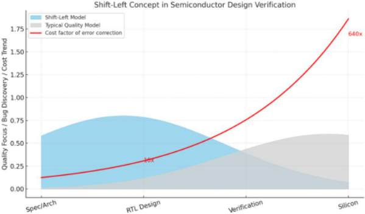
从历史上看，左移策略一直强调加速仿真，以复现在硅片层面可观察到的缺陷触发条件。尽管电子设计自动化（EDA）厂商不断取得进展，但在流片前环境中，复现数天才出现一次的极罕见边角用例条件仍然受到极大限制。
两大主要挑战阻碍了全面的流片前边角用例验证。
人工编写的设计规范本质上是不完整的。功能覆盖率仓由规范派生而来，而规范通常只描述高层功能，却遗漏了许多在 SoC 层面出现的硬件条件。因此，传统上一直采用随机化来探索边角用例。然而，经验表明，真实的硅片缺陷很少由简单的随机化序列产生。覆盖率不仅应当衡量验证进度，还应当识别缺失的验证场景。这就要求超越基于规范的覆盖率，转向一种能够枚举所有功能特性和硬件条件的方法学。
流片前验证的速度要慢得多，即使采用仿真加速器，其运行速度也比硅片性能低大约三个数量级。因此，可执行场景的数量受到限制，工程师几乎不可能手动构造出全面验证所需的全部硬件条件。然而，与硅片不同的是，流片前环境提供了独特的优势，例如细粒度的信号级控制、全面的可观测性，以及并行执行数百甚至数千个测试的能力。这些特性使得更灵活的测试策略成为可能，并促使一种方法的产生：有意地设计精简的测试来构造所需的硬件条件。
为应对这两个挑战，我们研究了利用 IP-XACT 设计描述进行 PSS 建模的方法。IP-XACT 是由 IEEE 1685 定义的一种标准化技术格式，它以标准化的元数据格式描述设计组件，从而提高 IP 的可复用性，并使 RTL 集成得以自动化。通过将 IP-XACT 中的设计集成信息直接导入 PSS，传统上复杂且耗费人力的手动指定硬件细节的过程得到了显著的简化和自动化。此外，通过 IP-XACT 端口行为分析，功能覆盖率得到了大幅扩展。在本文中，我们展示了如何利用 IP-XACT 信息将 SoC 内部结构系统地纳入 PSS 模型，从而实现模型与测试的自动生成，并展示了该方法如何实现功能覆盖率的大幅扩展。
可移植激励标准（PSS）主要聚焦于对功能行为和流程进行建模，以描述测试意图。因此，诸如层次结构或控制/数据路径之类的 SoC 级结构信息一直未得到充分利用。
为此，DVCon US 2018 论文《Building Portable Stimulus Into Your IP - XACT Flow》[3] 研究了一种将预定义 PSS 动作（action）嵌入 IP-XACT 的方法，从而实现能够直接反映 IP-XACT 组件树的 PSS 建模。在本工作中，我们更进一步，通过分析包括 IP-XACT 在内的设计规范，识别可能在 SoC 级别出现的所有潜在功能用例。基于这一分析，我们展示了自动生成完整 PSS 模型（包括组件与动作）的结果，这些模型能够验证上述功能用例。
图 2 给出了所提出的基于 IP-XACT 的 PSS 建模策略的概览。PSS 建模所需的信息从多个 IP-XACT XML 文件中提取，并整合为统一的、基于 JSON 的 PSS 建模数据库。该数据库捕获了 SoC 层次结构、组件间互连、端口级行为以及直接源自设计描述的功能关系。基于该数据库，自动生成一个结构 PSS 模型，在抽象层面表示 SoC 拓扑及其功能交互空间。与此同时，对独立编写、按 IP 级功能组织的动作库进行分析，并有选择地将其与生成的结构模型相结合。通过这一集成步骤，实例级动作与建模数据库中存储的相应端口行为和互连信息相关联，最终形成完整的项目特定 PSS 模型。在生成可执行测试的实现层，进一步引用 PSS 建模数据库，以纳入来自实际设计的 RTL 路径、IP 细节和连接映射。这种方法实现了抽象动作与设计特定实现信息之间的自动绑定，使工程师无需再从设计规范中手动检索并编码 RTL 路径或集成细节。由此，结构信息与可复用的动作语义均以完全自动化的方式系统地融入最终的 PSS 模型。
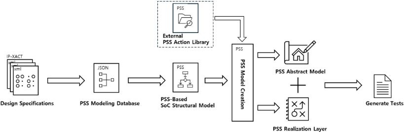
我们在该工作流程中使用了两个脚本：一个是从 IP-XACT 中提取构建 PSS 模型所需信息并建立 PSS 建模数据库的解释脚本，另一个是从该数据库生成 PSS 模型的生成脚本。我们的目标是建立一个无需任何人工投入即可从 IP-XACT 自动推导出 PSS 模型的环境。为了避免依赖过于复杂的脚本，我们对数据库模式（schema）和整体建模架构都进行了精心设计。在下一节中，我们将详细描述这一过程，并展示由此生成的产物。
在SoC层面，所有功能行为都源于内部IP与模块之间的互连。因此，为了验证SoC层面可能出现的各种功能条件，构建一个能够反映SoC内部各IP与模块之间层次结构和互连关系的PSS模型至关重要。本文给出了一个简化的示例SoC，用以说明如何利用IP-XACT信息实现PSS建模。
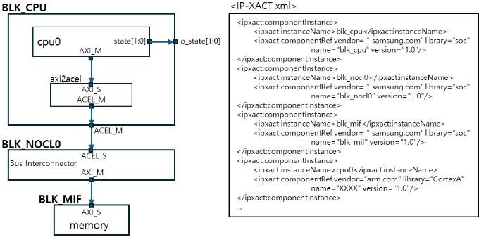
我们首先分析了IP-XACT中定义的实例层次结构，并将SoC设计层次（包括每个模块及其内部IP组成）纳入PSS建模数据库。图4展示了由示例SoC的IP-XACT描述推导得到的JSON格式PSS建模数据库的简化结构视图。完整的JSON清单见附录A。如图所示，数据库采用层次化实例键来表示SoC实例之间的结构关系。为每个模块及其内部实例分配了唯一标识符，以便在PSS环境中便捷地访问实例属性。
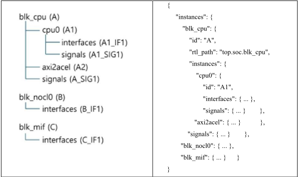
除SoC层次结构之外，PSS建模数据库还记录了实例之间的连接信息。通过汇总来自IP-XACT描述的连接数据，我们生成了connections条目，如图5所示。每条连接都指定了源端口与目的端口、连接类型以及一个唯一标识符，从而可在PSS模型中直接使用。此外，通过整合这些连接，我们构建了路径目录（Path Catalog），其中记录了从每个源端口到其对应目的端口的完整遍历路径。这些元素共同构成了连接映射（Connection Map），完整地表示了SoC的实例间连接关系。
连接映射不仅描述了简单的源到目的关系，还为PSS模型提供了有关IP、模块以及整个SoC的层次信息。基于这些信息，PSS能够生成系统地涵盖完整SoC结构的测试场景。
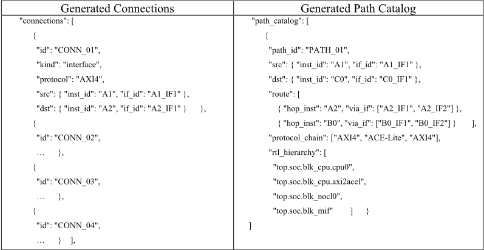
为了从由IP-XACT构建的JSON数据库生成PSS模型，我们开发了一个名为db_types的包，如图6所示。该包对从JSON数据库中提取的每个实例的属性字段及实例间互连关系进行了形式化定义，使其能够在PSS环境中得到系统化的表示与利用。
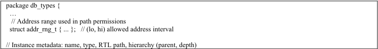
通过上文所述的 SoC 连接图（SoC Connection Map）建模，我们得以构建一个数据库，用以刻画 SoC 内各模块及其对应 IP 实例之间的结构层次与互连关系。基于这些信息，我们开发了一种方法，能够系统地识别 SoC 内可能出现的所有功能行为条件。该方法克服了传统验证通常仅关注验证单个功能操作的局限性，并能够生成涵盖整个 SoC 范围内功能交互复杂组合的测试场景。
SoC 内可能出现的所有功能条件，均源自信号端口之间大量的连接关系。通过前文所述的连接图（Connection Map）建模过程，我们构建了一个数据库，其中包含从 IP-XACT 中提取的所有实例端口。端口扫描（port-scan）过程首先枚举各模块实例之间的连接关系，其中每条连接被表示为由一个源端口（source port）和一个目的端口（destination port）构成的端口对。源端口发起一项影响其对端的操作，而目的端口则从外部输入接收功能性影响。
这些连接可能表现为 ad-hoc 式的信号交互，例如 o_state[1:0] 的示例，即一个发生翻转的信号与另一个模块进行通信；也可能表现为基于标准化接口的交互，例如 AXI、ACE 或 CHI，其中多个信号按照既定协议运作。我们对这两类连接均进行了分类，并将其编码存入数据库。利用该数据库，可以轻松获取任意两个模块之间连接所涉及的端口列表。
通过端口扫描（Port Scan）过程获得相连端口的列表之后，下一步是执行行为搜索（Behavior Search）。行为搜索会枚举每个端口上可能发生的所有操作，从而能够预测由这些端口行为可能引发的功能性条件。ad-hoc 端口与接口端口的具体流程有所不同。对于不存在预定义通信规则的 ad-hoc 端口，行为搜索通过查阅设计规范中的端口描述并据此生成行为键（behavior key）来执行，如下图所示。
相比之下，按照预定义协议进行通信的接口端口被视为一个接口组，相应协议所定义的事务类型则作为行为列表纳入模型之中。
"signals": { "state": { "id": "A1_SIG1", "type": "ad-hoc", "name": "state", "dir": "out", "width": 2, "rtl_path": "top.soc.blk_cpu.cpu0.state", "behaviors": { "0": { "name": "idle" }, "1": { "name": "write" }, "2": { "name": "read" } } } }, "interfaces": { "axi_m": { … "behaviors": { "AW": { "name": "axi_write_address", "rtl_path": "top.soc.blk_cpu.cpu0.axi_m.AW" }, "W": { "name": "axi_write_data", "rtl_path": "top.soc.blk_cpu.cpu0.axi_m.W" }, "AR": { "name": "axi_read_address", "rtl_path": "top.soc.blk_cpu.cpu0.axi_m.AR" }, "R": { "name": "axi_read_data", "rtl_path": "top.soc.blk_cpu.cpu0.axi_m.R" }, "B": { "name": "axi_write_response", "rtl_path": "top.soc.blk_cpu.cpu0.axi_m.B" } } } }
由于目的端口以接收输入的方式扮演被动角色，我们不会为目的端口显式地维护端口行为列表。然而，当源端口发生某个行为动作时，目的端口所在模块可能进入的各种状态会被捕获为行为搜索结果的一部分，并反映到模型中，从而支持构建更加多样的功能性条件。这些状态包括空闲（idle）状态、其他功能正处于活动状态的忙（busy）状态，以及时钟门控或电源门控状态。此外，如果该模块支持错误或恢复机制，此类状态信息也会通过行为搜索过程被纳入其中。
// The full implementation is included in Appendix B. "dst_states": [ { "name": "idle", "code": 0, "description": "No outstanding transactions; ready to accept a new AXI write." }, … ]
功能行为建模过程的最后一步，是将从连通性分析中识别出的行为与相应的便携式激励标准（PSS）动作（action）关联起来。
在 PSS 中，动作表示功能的最小单元，测试场景通过组合这些动作来构建。每个 PSS 动作通过一个表达其功能意图的抽象层和一个定义其在目标平台上实现方式的实现层进行建模。在现有流程中，即使复用相同的 IP 功能，不同产品之间片上系统（SoC）集成的差异也常常要求对实现层进行修改。因此，实现相同功能的动作必须针对每个项目重新创建，从而导致显著的低效。
通过将 PSS 动作建模为其实现层引用由 IP-XACT 构建的 PSS 建模数据库，我们可以显著减少项目特定的依赖关系。在这种方法下，动作仅在抽象层进行维护以表达其功能意图，而实现层则通过一个查询 IP-XACT 派生数据库的动作库（action library）来实现。因此，不再需要为每个项目创建新的动作，先前定义的动作库可以在面向新设计的测试生成过程中直接复用。
图 13 展示了在所提出的框架中动作库如何被管理和使用。动作库镜像了 IP-XACT 实例信息的层次结构，使工程师能够轻松定位与特定实例相关联的完整动作集合，如图所示。动作库并非被直接使用，而是通过引用的方式，仅将所需信息提取到项目特定的模型中。这种方法使动作库能够独立于各个项目或测试环境进行维护，从而避免与特定验证设置紧密耦合。
在图 13 所示的示例中，CPU 动作库 arm_cortexa_xxxx_1.0.pss 通过并入一个动作数据库而得到扩展，并从中生成项目级模型（cpu.pss）。此外，动作库元数据被传递到 prj_cfg.yaml 和 action_registry.yaml 中，从而支持系统化的测试生成，并便于对动作使用情况和覆盖率进行结构化审查。
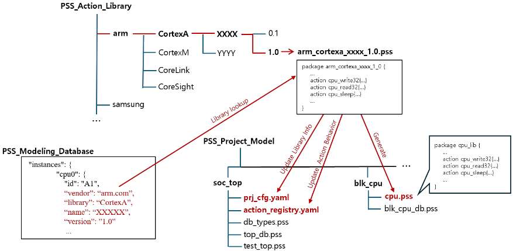
图 14 展示了动作库中的动作如何与 JSON 数据库中定义的行为条目相关联。在编写动作库时，我们采用了一种方法，即将给定实例的端口信息及相应的行为描述以注释形式的 YAML 格式注解嵌入到动作定义中，如图所示。
在为单个实例生成动作库的过程中，基于 IP-XACT 的端口扫描与行为搜索流程与构建 PSS 建模数据库时所采用的流程完全相同。然而，在生成描述功能操作的动作时，会执行一个额外的步骤，对以预定义结构化格式编写的设计规范进行解析。在该步骤中，端口与功能描述被加以解释，以按照固定模板构建每个动作的结构骨架。
与每个动作相关联的带注释的 YAML 格式元数据在实例级建模过程中生成，用于将动作定义与存储在 JSON 数据库中的相应端口行为关联起来。
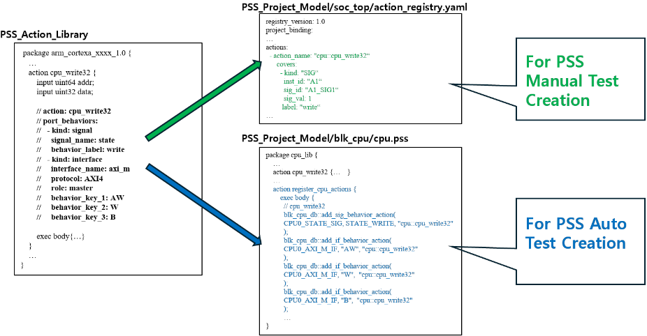
在图中所示的工作流程中，从动作库生成项目模型 cpu.pss 的过程包含一个显式步骤，该步骤将实例级动作与 SoC 级行为列表相关联。通过这种关联，模型捕获了能够触发特定端口行为的动作集合。因此，只需指定行为约束，即可系统地生成所有包含给定端口行为的测试用例，而无需手动枚举各个测试序列。
针对端口行为的动作匹配还会生成一个 YAML 格式的辅助数据库，称为 action_registry，在图中以绿色突出显示。该数据库本身并非 PSS 模型，而是 PSS 模型结构内部所维护的行为匹配表的外部化表示。通过将这些信息暴露于 PSS 模型之外，action_registry 使得对生成模型进行结构化审查成为可能，并便于利用外部脚本构建 PSS 直接生成的测试场景之外的其他形式的测试场景。
基于该方法的实验结果的详细内容将在后续的案例研究章节中给出。
利用 IP-XACT 信息构建 PSS 模型，使得借助图 8 和图 9 所示的查找动作来生成测试场景成为可能。这一能力为识别给定测试所需的信号级功能条件提供了一种高效机制。换言之，当某个特定的 PSS 动作被执行时，PSS 模型会提供一个数据库，用于描述哪些端口行为会被触发，以及这些行为如何传播至不同模块中的其他实例或对其产生影响。
为了演示这种基于 IP-XACT 的 PSS 模型在实践中如何加以利用，我们将其应用于我们此前在 DVCon 上发表的 PSS 方法论，并阐明其在该框架内的集成方式。
通过上文所述的功能行为建模（Functional Behavior Modeling），我们推导出了在 SoC 层面所执行的功能行为的完整列表。特别地，通过将目标实例的可能状态信息纳入行为模型，我们得以施加更精确、更具表达力的功能条件。这一过程使我们能够通过识别并添加那些在设计规范中未明确指定、但通过系统性端口扫描和基于行为的搜索所揭示的功能条件，来扩展功能覆盖率。
然而，我们所遇到的大多数边界情况（corner case）缺陷都表现出高度复杂且极少可复现的序列条件。典型的例子包括：当总线互连（bus-fabric）写缓冲区溢出导致写通道停顿的瞬间恰好有侦听（snoop）请求到达而触发的死锁；由掉电配置期间被断言的唤醒中断所导致的状态机故障；以及由多个一致性（coherent）主设备同时发出写事务而引发的竞争条件。这类场景在流片前（pre-silicon）环境中是出了名地难以检测。这些边界情况的一个共同特征是，它们主要由信号层面细微的时序条件所诱发，而这些时序条件只有在执行特定功能操作时才会被激活。对于此类边界情况，硅片层面的典型方法本质上就是依靠运气：工程师在很长一段时间内运行各种相关功能，期望触发条件最终会出现。
在流片前环境中复现此类条件仍然十分困难。然而，像硅片层面通常所做的那样依赖长时间的随机测试，既不有效也不合适，因为流片前环境在信号层面提供了完全的可观测性和可控性。
受这些挑战的推动，我们此前在 DVCon US 2022 上发表了一种利用 PSS 复现边界情况条件的方法学，题为"PSS Action Sequence Modeling Using Machine Learning" [4]。在本工作中，我们通过利用基于 IP-XACT 的 PSS 模型对该方法学进行了扩展，从而能够直接从 IP-XACT 设计信息中推导出更先进的信号访问序列。
下图总结了此前在 DVCon US 2022 上发表的工作。
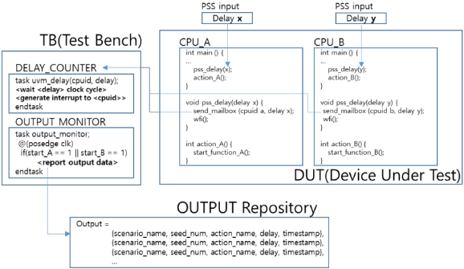
我们在此示例中想要展示的，是一个能够生成如下测试的 PSS 序列模型：由 action_A 和 action_B 触发的事务精确地同时发生。为了实现这一行为，我们此前基于设计规范实现了一个用于手动对齐序列时序的专用延迟计数器，以及一个用于验证两个事务是否同时启动的信号监视器。
在本工作中，通过将 IP-XACT 所表示的设计规范直接纳入 PSS 模型，我们得以以显著更加自动化、更加高效的方式实现与动作执行相关联的端口行为监视器。
// sig_monitor.pss // start_monitor: resolve target RTL signal and invoke SV monitor action start_monitor { activity { resolve_from_db; } exec body { // Start monitoring "mon_rtl_path" for the given behavior value/label
start_sig_behavior_monitor(mon_rtl_path, mon_behavior_val, mon_behavior_label); } } … // sig_behavior_monitor.sv // Encoded CPU state values (idle / write / read) typedef enum logic [1:0] { CPU_STATE_IDLE = 2'b00, CPU_STATE_WRITE = 2'b01, CPU_STATE_READ = 2'b10 } cpu_state_e; // Interface + path resolver (details omitted) // interface state_mon_if (input logic clk); logic [1:0] state; endinterface // extern function state_mon_if get_state_if_from_path(string rtl_path); // Start a background monitor for the given RTL path and behavior task automatic start_sig_behavior_monitor(string rtl_path, int behavior_val, string behavior_label); state_mon_if sif = get_state_if_from_path(rtl_path); cpu_state_e expected = cpu_state_e'(behavior_val[1:0]); fork forever begin @(posedge sif.clk); if (sif.state === expected) $display("[MON] %0t : Observed %s (%0d) on %s", $time, behavior_label, behavior_val, rtl_path); end join_none endtask
此外，通过利用 PSS 建模数据库中所包含的信息，即使这一能力并未在 PSS 标准中加以定义，也可以通过外部脚本流程为 PSS 动作行为生成断言检查器，并将其应用于测试平台（testbench）之中，如下所示。
module action_behavior_assertion #( parameter int EXPECTED_STATE = 2'b01, // expected CPU state parameter int MAX_LATENCY = 8 // allowed cycles to reach it ) ( state_mon_if mon_if ); typedef enum logic [1:0] { CPU_STATE_IDLE = 2'b00, CPU_STATE_WRITE = 2'b01, CPU_STATE_READ = 2'b10 } cpu_state_e; localparam cpu_state_e EXPECTED = cpu_state_e'(EXPECTED_STATE[1:0]); // Property: when action_trig rises, state must reach EXPECTED within MAX_LATENCY cycles property p_action_behavior; @(posedge mon_if.clk) disable iff (!mon_if.rst_n) mon_if.action_trig |-> ##[0:MAX_LATENCY] (mon_if.state == EXPECTED); endproperty // Assertion a_action_behavior: assert property (p_action_behavior) else $error("[ASSERT] Action-behavior violation: state=%0b expected=%0b", mon_if.state, EXPECTED); endmodule … // Example instantiation state_mon_if cpu0_state_if(.clk(clk), .rst_n(rst_n)); action_behavior_assertion #( .EXPECTED_STATE(2'b01), // write .MAX_LATENCY (8)
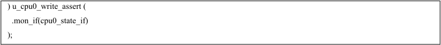
通过利用 IP-XACT 信息，我们增强了此前的动作序列模型，从而能够高效地复现并验证此前在硅前环境中难以触发的边界情况。下表展示了采用新 PSS 模型后，针对宿主 CPU 所在的 blk_cpu 所识别出的功能覆盖率仓数量的差异。总体而言，功能覆盖率仓的总数增加了约 30%；尤为值得注意的是，由于采用了前文所述的先进序列模型，跨功能仓的数量更是惊人地增加了 434%。
表 I
| Functional Cover group | Previous #of function bins | Latest #of function bins | Difference (%() |
|---|---|---|---|
| Accessibility | 224 | 249 | +11.1% |
| Block functions | 126 | 131 | +3.9% |
| Bus interface | 80 | 107 | +33.7% |
| Clock | 147 | 183 | +24.4% |
| Power | 104 | 143 | +37.5% |
| Reset | 19 | 22 | +15.7% |
| Interrupt | 295 | 345 | +16.9% |
| Security | 160 | 178 | +11.2% |
| Cross Functions | 38 | 203 | +434.2% |
| Total: | 1193 | 1558 | +30.5% |
| Functional Cover group | Previous #of function bins | Latest #of function bins | Difference (%() |
在 DVCon US 2023 上发表的一项题为"Early Detection of Functional Corner-Case Bugs using Methodologies of ISO 26262"的工作 [5]，提出了一种通过推导系统性失效严重度等级（SFSL）来预测设计薄弱环节并制定验证计划的方法。该方法的灵感源自 ISO 26262[6] 中定义的风险评估流程——在该流程中，汽车安全完整性等级（ASIL）依据与严重度相关的准则来确定。
如下图所示，风险预测流程会评估各种风险因素，以估计哪些 IP 模块及其对应的功能最有可能出现潜在薄弱环节。
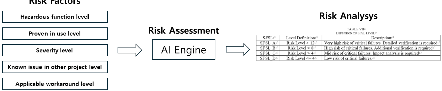
为了在大规模 SoC 设计中尽早识别功能薄弱环节和边界用例失效，我们开发了一种 AI 辅助的风险预测引擎，该引擎分析异构的历史开发数据，并自动推导出实例级和接口级的风险评分。该引擎接收缺陷报告、问题跟踪日志、RTL/spec 变更历史、功能覆盖率趋势以及设计讨论邮件，并将其转换为与 PSS 建模数据库中所使用的 IP-XACT 实例层次结构对齐的统一多模态表示。
整合了四类输入：
每个数据源都会被规范化，并映射到其对应的 IP-XACT 实例 ID（inst_id），从而实现一致的多域对齐。
基于 Transformer 的多模态融合编码器将文本特征、代码差异、结构性 IP-XACT 属性以及验证指标整合为统一的风险嵌入：
最终的风险评分由三个子组件推导得出：
(a) 失效可能性模型（Failure Likelihood Model），利用严重性嵌入和历史失效聚类来预测复发风险（F1≈0.78）；
(b) 影响传播模型（Impact Propagation Model），在 IP-XACT 连接图上应用图神经网络（GNN）[9]，以估计风险如何在相互依赖的模块之间传播；
(c) 角落用例脆弱性模型（Corner-Case Vulnerability Model），使用基于机器学习（ML）的 PSS 动作序列建模技术（DVCon 2022）来检测动作序列缺口以及协议层面未经测试的行为。
每个实例都会被赋予一个风险标签（0 - 3），该标签会影响场景加权、动作优先级排序以及覆盖率引导。风险升高的接口（例如 blk_cpu.axi_m）会触发针对性的激励生成，涉及 AXI 交织、跨边界突发传输、在途复位（reset-in-flight）以及时序关键序列，如图 19 所示。
本项工作的一个主要贡献在于：AI 预测被直接集成到 PSS 建模数据库中，而无需创建任何额外的基于 AI 的测试生成模型。由于 PSS 是一种建模语言，AI 引导的更新只需调整实例元数据和约束权重——而无需重新生成测试平台基础设施。
换言之，由于 PSS 已经提供了可被 AI 引擎直接利用的完整可执行模型，因此无需开发大量在大规模数据集上训练的 AI 模型即可实现基于 AI 的测试生成，这显著降低了通常与 AI 驱动的验证自动化相关联的开销。
| Risk Assessment result | Generated PSS action sequence |
|---|---|
| { "inst_id": "A1", "risk_score": 3, "dominant_factors": [ "High RTL churn in address decoder", "Unresolved cluster: timing-sensitive stall bug pattern", "Under-tested AXI4 interleaving sequences" ], "recommended_pss_actions": [ "axi_interleave_seq", "burst_boundary_crossing", "reset_mid_transaction" ] } | if (inst_db[A1].risk_score >= 2) { scenario.apply_priority("high"); scenario.inject_action_seq(risky_action_list); } |
| Risk Assessment result | Generated PSS action sequence |
通过基于 IP-XACT 的 PSS 建模数据库，我们能够识别每个实例的功能与结构路径，并自动生成所有相关联的测试。这一能力表明，源自 SoC 内部所有设计路径和行为关系的完整功能用例集合，可以通过设计信息分析被系统地发掘出来。因此，以往仅在硅片层面间歇性出现的角落用例条件，如今可以在流片前验证环境中被捕获。这证明了实现真正左移 SoC 验证的实践可行性。
随着现代 SoC 的集成密度与功能复杂度不断提升，意料之外的功能性角落用例缺陷越来越多地是在硅片阶段、而非在流片前验证期间被发现。因此，设计验证中功能覆盖率的可靠性有所下降，如今 SoC 验证往往不再仅仅被视为功能验证，而是被视为集成验证。造成这种情况的一个因素在于，尽管 SoC 设计的复杂度日益增长，许多组织的验证方法学仍然以 UVM 为中心。尽管 PSS 作为一种后继方法学于 2018 年被推出，但其作为主流方法的采用一直较为有限。
我们认为，许多需要在硅片上经过数天测试才能复现的角落用例缺陷，本质上并非硅片独有问题，而是未曾预料到的功能条件所导致的结果——倘若当时已实现足够的功能覆盖率，这些功能条件本可以在基于仿真的流片前验证中被揭示出来。要实现这一点，需要识别范围更广的异常场景，并生成规模显著更大的针对性测试集合。多年来，我们一直致力于应对这一挑战，并证明了将 PSS 与 IP-XACT 相结合能够大幅扩展功能覆盖率，从而在流片前阶段检测出那些原本只会在硅片上才暴露出来的缺陷。
PSS 通过实现大幅的功能覆盖率扩展，代表着推进左移 SoC 验证的一项关键方法学；在新兴的 AI 驱动验证时代，其价值将变得更加重大。尽管本文所展示的示例聚焦于一个简化的 SoC，我们希望本文提供的概念与技术能够为寻求拓宽 PSS 采用与应用范围的工程师和 EDA 工具开发者提供切实的见解。
"instances": { "blk_cpu": { "id": "A", "rtl_path": "top.soc.blk_cpu", "instances": { "cpu0": { "id": "A1", ' vendor ' : ' arm.com ' , ' library ' : ' CortexA ' , ' name ' : ' XXXXX ' , ' version ' : ' 1.0 ' "rtl_path": "top.soc.blk_cpu.cpu0", "interfaces": { "axi_m": { "id": "A1_IF1", "protocol": "AXI4", "role": "master", "rtl_path": "top.soc.blk_cpu.cpu0", "behaviors": { "AW": { "name": "axi_write_address", "rtl_path": "top.soc.blk_cpu.cpu0.axi_m.AW" }, "W": { "name": "axi_write_data", "rtl_path": "top.soc.blk_cpu.cpu0.axi_m.W" }, "AR": { "name": "axi_read_address", "rtl_path": "top.soc.blk_cpu.cpu0.axi_m.AR" }, "R": { "name": "axi_read_data", "rtl_path": "top.soc.blk_cpu.cpu0.axi_m.R" }, "B": {
"name": "axi_write_response", "rtl_path": "top.soc.blk_cpu.cpu0.axi_m.B" } } } }, "signals": { "state": { "id": "A1_SIG1", "name": "state", "dir": "out", "width": 2, "rtl_path": "top.soc.blk_cpu.cpu0.state", "behaviors": { "0": "idle", "1": "write", "2": "read" } } } }, "axi2acel": { "id": "A2", ' vendor ' : ' samsung.com ' , ' library ' : ' bridge ' , ' name ' : ' axi2acel ' , ' version ' : ' r0p0_0 ' "rtl_path": "top.soc.blk_cpu.axi2acel", "interfaces": { "axi_s": { "id": "A2_IF1", "protocol": "AXI4", "role": "slave", "rtl_path": "top.soc.blk_cpu.axi2acel" }, "acel_m": { "id": "A2_IF2", "protocol": "ACE-Lite", "role": "master", "rtl_path": "top.soc.blk_cpu.axi2acel" } } } }, "signals": { "o_state": { "id": "A_SIG1", "name": "o_state", "dir": "out", "width": 2, "rtl_path": "top.soc.blk_cpu.o_state" } } }, "blk_nocl0": { "id": "B", "rtl_path": "top.soc.blk_nocl0", "interfaces": { "acel_s": { "id": "B_IF1", "protocol": "ACE-Lite", "role": "slave", "rtl_path": "top.soc.blk_nocl0" }, "axi_m": { "id": "B_IF2", "protocol": "AXI4", "role": "master", "rtl_path": "top.soc.blk_nocl0" } } "dst_states": [ { "name": "idle", "code": 0, "description": "无未完成的事务；准备好接受新的 AXI 写操作。" }, {
"name": "busy", "code": 1, "description": "内部缓冲区已部分填满或已满；写延迟可能增加。" }, { "name": "clock_gated", "code": 2, "description": "时钟门控已使能；AXI 写操作必须先重新使能时钟，数据才能被接收。" }, { "name": "power_gated", "code": 3, "description": "模块已下电；AXI 写操作被阻塞，或作为错误进行路由。" }, { "name": "error", "code": 4, "description": "错误情况，例如地址译码错误或保护违例。" }, { "name": "recovering", "code": 5, "description": "模块正在从错误中恢复，可能会暂时停顿或丢弃事务。" } ] }, "blk_mif": { "id": "C", "rtl_path": "top.soc.blk_mif", "interfaces": { "axi_s": { "id": "C_IF1", "protocol": "AXI4", "role": "slave", "rtl_path": "top.soc.blk_mif" } } "dst_states": [ { "name": "idle", "code": 0, "description": "无未完成的事务；已准备好接收新的 AXI 写操作。" }, { "name": "busy", "code": 1, "description": "内部缓冲区已部分填满或已满；写延迟可能增加。" }, { "name": "clock_gated", "code": 2, "description": "时钟门控已使能；AXI 写操作必须先重新使能时钟，数据才能被接收。" }, { "name": "power_gated", "code": 3, "description": "模块已下电；AXI 写操作被阻塞，或作为错误进行路由。" }, { "name": "error", "code": 4, "description": "错误情况，例如地址译码错误或保护违例。" }, { "name": "recovering", "code": 5, "description": "模块正在从错误中恢复，可能会暂时停顿或丢弃事务。" } ] } }, "connections": [ { "id": "CONN_01", "kind": "interface", "protocol": "AXI4", "src": { "inst_id": "A1", "if_id": "A1_IF1" }, "dst": { "inst_id": "A2", "if_id": "A2_IF1" } }, {
"id": "CONN_02", "kind": "interface", "protocol": "ACE-Lite", "src": { "inst_id": "A2", "if_id": "A2_IF2" }, "dst": { "inst_id": "B0", "if_id": "B0_IF1" } }, { "id": "CONN_03", "kind": "interface", "protocol": "AXI4", "src": { "inst_id": "B0", "if_id": "B0_IF2" }, "dst": { "inst_id": "C0", "if_id": "C0_IF1" } }, { "id": "CONN_04", "kind": "signal", "src": { "inst_id": "A1", "sig_id": "A1_SIG1" }, "dst": { "inst_id": "A0", "sig_id": "A0_SIG1" }, "description": "cpu0.state[1:0] 驱动 blk_cpu.o_state" } ], "path_catalog": [ { "path_id": "PATH_01", "src": { "inst_id": "A1", "if_id": "A1_IF1" }, "dst": { "inst_id": "C0", "if_id": "C0_IF1" }, "route": [ { "hop_inst": "A2", "via_if": ["A2_IF1", "A2_IF2"] }, { "hop_inst": "B0", "via_if": ["B0_IF1", "B0_IF2"] } ], "protocol_chain": ["AXI4", "ACE-Lite", "AXI4"], "rtl_hierarchy": [ "top.soc.blk_cpu.cpu0", "top.soc.blk_cpu.axi2acel", "top.soc.blk_nocl0", "top.soc.blk_mif" ] } ]
附录 B. 生成的 PSS 模型示例
package db_types { // 通用类型与常量 type design_id_t : string; type block_id_t : string; type inst_id_t : string; type if_id_t : string; type sig_id_t : string; type proto_t : string; type role_t : string; struct addr_rng_t { uint64 lo; uint64 hi; }; // 路径内数组的最大尺寸 const MAX_BEHAVIORS = 8; const MAX_SIG_LINKS = 16; const MAX_HOPS = 8; const MAX_VIA_IF = 4; const MAX_PROTO_CHAIN = 8; const MAX_RTL_NODES = 16; const MAX_ALLOW_RANGES = 8; // 记录类型 // 实例 struct inst_rec_t { inst_id_t id;
string name; string type; string rtl_abs; block_id_t owner_blk; inst_id_t parent; int depth; }; // 接口（端口） struct if_rec_t { if_id_t id; inst_id_t parent_inst; string name; proto_t proto; role_t role; string rtl_abs; }; // 信号与行为标签 struct sig_behavior_t { int value; string label; }; struct sig_rec_t { sig_id_t id; inst_id_t parent_inst; string name; string dir; int width; string rtl_abs; list<sig_behavior_t> behaviors; }; typedef struct { string kind; // "SIG" 或 "IF" sig_id_t sig_id; if_id_t if_id; int sig_val; // 用于信号行为 string if_bkey; // 用于接口行为（AW/W/AR/R/B） string action_name; // 例如 "cpu::cpu_write32" } behavior_action_t; // 块内信号连接 struct sig_link_t { sig_id_t src_sig; sig_id_t dst_sig; string description; }; // 路径中的跳段条目 struct hop_rec_t { inst_id_t hop_inst; list<if_id_t> via_if; }; // 顶层路径记录 struct path_rec_t { string path_id; if_id_t src_if; if_id_t dst_if; list<hop_rec_t> route; list<string> protocol_chain; list<string> rtl_hierarchy; list<addr_rng_t> allow; }; };
import db_types::*; package blk_cpu_db { behavior_action_t behavior_actions[128]; int behavior_actions_n = 0; function void add_sig_behavior_action( sig_id_t sig_id, int sig_val, string action_name ); behavior_action_t e; e.kind = "SIG";
e.sig_id = sig_id; e.sig_val = sig_val; e.if_id = ""; e.if_bkey = ""; e.action_name = action_name; behavior_actions[behavior_actions_n] = e; behavior_actions_n++; endfunction function void add_if_behavior_action( if_id_t if_id, string if_bkey, string action_name ); behavior_action_t e; e.kind = "IF"; e.if_id = if_id; e.if_bkey = if_bkey; e.sig_id = ""; e.sig_val = -1; e.action_name = action_name; behavior_actions[behavior_actions_n] = e; behavior_actions_n++; endfunction action find_actions_by_behavior { input string kind; // "SIG" 或 "IF" input sig_id_t sig_id; input if_id_t if_id; input int sig_val; input string if_bkey; output string actions[16]; output int actions_n; exec body { int i; actions_n = 0; for (i = 0; i < behavior_actions_n; i++) begin if (behavior_actions[i].kind != kind) continue; if (kind == "SIG") begin if (behavior_actions[i].sig_id == sig_id && behavior_actions[i].sig_val == sig_val) begin if (actions_n < 16) begin actions[actions_n] = behavior_actions[i].action_name; actions_n++; end end end if (kind == "IF") begin if (behavior_actions[i].if_id == if_id && behavior_actions[i].if_bkey == if_bkey) begin if (actions_n < 16) begin actions[actions_n] = behavior_actions[i].action_name; actions_n++; end end end end } } component blk_cpu_db_c { const block_id_t BLK = "blk_cpu"; // 清单大小 const int N_INSTS = 3; const int N_IFS = 3; const int N_SIGS = 2; const int N_LINKS = 1; // 清单表 array<inst_rec_t, N_INSTS> insts; array<if_rec_t, N_IFS> ifs; array<sig_rec_t, N_SIGS> sigs;
array<sig_link_t, N_LINKS> sig_links; // 数据填充动作 build_db { exec body { // ---- 实例 ---- insts[0].id="A0"; insts[0].name="blk_cpu"; insts[0].type="BLOCK"; insts[0].rtl_abs="top.soc.blk_cpu"; insts[0].owner_blk=BLK; insts[0].parent="T0"; insts[0].depth=1; insts[1].id="A1"; insts[1].name="cpu0"; insts[1].type="RISC_CORE"; insts[1].rtl_abs="top.soc.blk_cpu.cpu0"; insts[1].owner_blk=BLK; insts[1].parent="A0"; insts[1].depth=2; insts[2].id="A2"; insts[2].name="axi2acel"; insts[2].type="AXI2ACE_BRIDGE"; insts[2].rtl_abs="top.soc.blk_cpu.axi2acel"; insts[2].owner_blk=BLK; insts[2].parent="A0"; insts[2].depth=2; // ---- 接口 ---- ifs[0].id="A1_IF1"; ifs[0].parent_inst="A1"; ifs[0].name="axi_m"; ifs[0].proto="AXI4"; ifs[0].role="master"; ifs[0].rtl_abs="top.soc.blk_cpu.cpu0"; ifs[1].id="A2_IF1"; ifs[1].parent_inst="A2"; ifs[1].name="axi_s"; ifs[1].proto="AXI4"; ifs[1].role="slave"; ifs[1].rtl_abs="top.soc.blk_cpu.axi2acel"; ifs[2].id="A2_IF2"; ifs[2].parent_inst="A2"; ifs[2].name="acel_m"; ifs[2].proto="ACE-Lite"; ifs[2].role="master"; ifs[2].rtl_abs="top.soc.blk_cpu.axi2acel"; // ---- 信号 ---- // cpu0.state[1:0] sigs[0].id="A1_SIG1"; sigs[0].parent_inst="A1"; sigs[0].name="state"; sigs[0].dir="out"; sigs[0].width=2; sigs[0].rtl_abs="top.soc.blk_cpu.cpu0.state"; sigs[0].behaviors_n = 3; sigs[0].behaviors[0].value=0; sigs[0].behaviors[0].label="idle"; sigs[0].behaviors[1].value=1; sigs[0].behaviors[1].label="write"; sigs[0].behaviors[2].value=2; sigs[0].behaviors[2].label="read"; // blk_cpu.o_state[1:0] sigs[1].id="A0_SIG1"; sigs[1].parent_inst="A0"; sigs[1].name="o_state"; sigs[1].dir="out"; sigs[1].width=2; sigs[1].rtl_abs="top.soc.blk_cpu.o_state"; sigs[1].behaviors_n = 0; // ---- 本地信号连接：cpu0.state -> blk_cpu.o_state ---- sig_links[0].src_sig="A1_SIG1"; sig_links[0].dst_sig="A0_SIG1";
sig_links[0].description="cpu0.state[1:0] drives blk_cpu.o_state"; } } } }; }; // 查找实用程序 // 返回完整表 action list_insts { output array<inst_rec_t, N_INSTS> out; output int n; exec body { n=N_INSTS; for (int i=0;i<N_INSTS;i++) out[i]=insts[i]; } } action list_ifs { output array<if_rec_t, N_IFS> out; output int n; exec body { n=N_IFS; for (int i=0;i<N_IFS;i++) out[i]=ifs[i]; } } action list_sigs { output array<sig_rec_t, N_SIGS> out; output int n; exec body { n=N_SIGS; for (int i=0;i<N_SIGS;i++) out[i]=sigs[i]; } } // 按特定实例、端口或信号查找 action inst_by_id { input inst_id_t id; output inst_rec_t rec; output bit found; exec body { found=0; for (int i=0;i<N_INSTS;i++) { if (insts[i].id==id){ rec=insts[i]; found=1; break; } } } } action ifs_by_inst { input inst_id_t id; output array<if_rec_t, N_IFS> out; output int n; exec body { n=0; for (int i=0;i<N_IFS;i++) { if (ifs[i].parent_inst==id){ out[n]=ifs[i]; n++; } } } } action sigs_by_inst { input inst_id_t id; output array<sig_rec_t, N_SIGS> out; output int n; exec body { n=0; for (int i=0;i<N_SIGS;i++) { if (sigs[i].parent_inst==id){ out[n]=sigs[i]; n++; } } } } action local_sig_links_via { input sig_id_t sid; output array<sig_link_t, N_LINKS> out; output int n; exec body { n=0; for (int i=0;i<N_LINKS;i++) { if (sig_links[i].src_sig==sid || sig_links[i].dst_sig==sid) { out[n]=sig_links[i]; n++; } }
import blk_cpu_db; package cpu { const inst_id_t CPU0_ID = "A1"; const if_id_t CPU0_AXI_M_IF = "A1_IF1"; const sig_id_t CPU0_STATE_SIG = "A1_SIG1"; const int STATE_IDLE = 0; const int STATE_WRITE = 1; const int STATE_READ = 2; action cpu_write32 { input uint64 addr; input uint32 data; activity { … } } action cpu_read32 { input uint64 addr; output uint32 data; activity { … } } action go_sleep { activity { … } } action register_cpu_actions { exec body { // cpu_write32 blk_cpu_db::add_sig_behavior_action( CPU0_STATE_SIG, STATE_WRITE, "cpu::cpu_write32" ); blk_cpu_db::add_if_behavior_action( CPU0_AXI_M_IF, "AW", "cpu::cpu_write32" ); blk_cpu_db::add_if_behavior_action( CPU0_AXI_M_IF, "W", "cpu::cpu_write32" ); blk_cpu_db::add_if_behavior_action( CPU0_AXI_M_IF, "B", "cpu::cpu_write32" ); // cpu_read32 blk_cpu_db::add_sig_behavior_action( CPU0_STATE_SIG, STATE_READ, "cpu::cpu_read32" ); blk_cpu_db::add_if_behavior_action( CPU0_AXI_M_IF, "AR", "cpu::cpu_read32" ); blk_cpu_db::add_if_behavior_action( CPU0_AXI_M_IF, "R", "cpu::cpu_read32" ); // go_sleep blk_cpu_db::add_sig_behavior_action( CPU0_STATE_SIG, STATE_IDLE, "cpu::go_sleep" ); } }